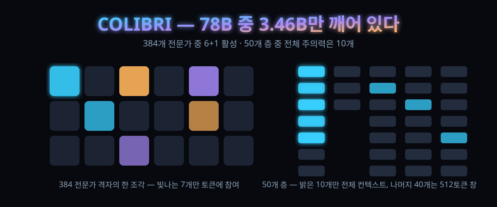

78B인데 쓰는 건 3.46B — '주권'을 무기로 낸 독일 오픈 모델 콜리브리가 24조 토큰에서 증명한 것

결론부터. 모델을 '키는' 문제가 아니라 '빌려쓰지 않는' 문제가 발등에 떨어진 조직이 있다. 독일 기업이 손안에 두는 자기 모델을 정면 카드로 꺼냈고, 설계의 거의 모든 숫자가 그 한 문장을 향해 맞춰져 있다.
알레프 알파가 10월 3일(현지) 콜리브리를 공개했다. 독일어·영어 전용 혼합전문가(MoE) 트랜스포머로, 전체 파라미터 78B, 토큰당 활성 3.46B, 컨텍스트는 최대 1M 토큰. 가중치 전량이 허깅페이스에 Apache 2.0으로 올라왔다. 발표일은 마침 독일 통일기념일이었다.
해커뉴스에는 원 발표 글이 표 475·댓글 286, IBM 엔지니어의 기술 해설이 표 409를 쌓았다(10월 3일 기준). "규제만 있고 혁신은 없다"는 소리를 들어온 쪽에서, EU AI법을 설계 단계부터 깎아 넣은 오픈웨이트를 실제로 꺼내든 사건이다.
30초 요약
| 항목 | 내용 |
|---|---|
| 무슨 사건 | 독일 알레프 알파가 독일어·영어 특화 오픈웨이트 LLM '콜리브리'를 10월 3일 공개. 78B 전체·토큰당 활성 3.46B(4.4%)·최대 1M 토큰·Apache 2.0 |
| 학습 규모 | B200 GPU 768장(96노드)으로 사전학습 20T 토큰 21일 + 중간학습 3.44T + 장문확장 201B — 통틀어 약 24T 토큰, 연산량 6.4e23 FLOPS |
| 독일어 비중 | 사전학습 믹스의 20% 이상(약 4.3T 토큰)이 독일어. 자체 파이프라인으로 웹에서 고르고 합성 생성으로 보탠 양만 2T 토큰 이상 |
| 효율 설계 | 384개 전문가 중 토큰당 6+공유1개만 활성; 50개 층 중 전체 주의력은 10개뿐, 나머지 40개는 512토큰 창. 123B 대신 78B로 좁힌 이유는 서빙 숫자 하나 |
| 쓰기 위한 조건 | FP8 가중치 약 78GB — 최소 A100 80GB 두 장 또는 H200·B200 한 장. 자체 vLLM 플러그인 패키지 필요 |
| 주의 | 성적 수치는 개발사가 자체 평가한 값이고 '같은 크기 비교 대상 중'이 범위. 훈련 코드는 공개 대상이 아니라 방법 재현에는 한계 |
1. 무엇이 터졌나
공개된 스펙부터 깔자. 콜리브리는 50개 층 MoE 트랜스포머다. 전체 78,103,074,560개 파라미터 중 토큰 하나를 읽고 쓸 때마다 일하는 건 3,457,573,120개(4.4%)뿐이다. 원어 처리는 262,144토큰이 기본이고 1,048,576토큰까지 검증됐다. 지식이 멈추는 시점은 영어·독일어 모두 2026년 6월 18일. 추론 모드 4단계(none·low·medium·high)와 도구 호출을 지원한다. 가중치는 FP8(float8_e4m3fn, 128×128 블록 양자화)이고 임베딩·LM 헤드·정규화·라우터만 bfloat16으로 남겼다.
학습은 3단계로 굴러간다. 16k 시퀀스로 사전학습 20T 토큰(21일), 64k 시퀀스로 중간학습 3.44T, 256k 시퀀스로 장문적응 201B. 하드웨어는 B200 768장 — 8장씩 묶은 HGX 노드 96대, 노드 안은 NVLink 5세대, 노드 사이는 인피니밴드다. 사전학습에만 39만 2천 GPU시간, 세 단계를 다 더하면 약 51만 GPU시간.
여기서 '주권(sovereign)'이라는 단어가 등장한다. 발표 글의 정의를 풀면 두 겹이다. 만드는 쪽: 독일 팀이 독일·핀란드 인프라에서, 유럽·독일 법 체계 아래, 외국 지배 없이 학습시켰다. 쓰는 쪽: 배포 자유와 지식재산 안전이 고객에게 통째로 양도되므로 준법('데이터가 어디로 갔나')이 모델의 속성으로 따라온다. 부처든 자동차 부품사든 자기 서버에서 돌리고 데이터를 밖으로 내보내지 않으며, 누구도 모델 뒤에서 스위치를 끌 수 없다. 회사는 EU 일반목적 AI 실무강령(GPAI CoP) 서명자이기도 하다.
2. 왜 대단한가
① '큰 모델'을 고른 기준이 성능표가 아니라 동시 접속 수
개발사가 직접 밝힌 규모 결정 과정이 이례적으로 정직하다. 32B에서 123B까지 키워보니 성능은 계속 좋아졌다 — 그런데 값이 커졌다. 최종 판단을 내린 건 서빙 숫자였다: H100 두 장 기준, 123B는 256k짜리 긴 요청을 3개밖에 못 받고, 78B는 18개를 받으면서 디코딩도 28% 빠르다. 성능 1%를 위해 동시 처리 6분의 1을 포기하지 않겠다는 계산이다. 벤치마크 순위가 아니라 '노드 한 대에 몇 명 태울 수 있나'가 모델 크기를 정한 셈인데, 상용 오픈웨이트 역사에서 꽤 드문 장면이다.
② 전문가 384개, 주의력 50층 중 40층을 '512토큰짜리 좁은 창'으로
활성 비율 4.4%를 만든 두 개의 트릭이 있다. 첫째, 전문가 수를 오리진의 128개에서 384개로 늘리고 하나당 폭은 768에서 512로 좁혔다. 넓고 적은 전문가보다 좁고 많은 편이 실험에서 나았고, 토큰당 6개 라우팅 + 공유 1개가 일한다. 둘째가 더 영리하다. 50개 층 중 전체 컨텍스트를 보는 건 5개 층마다 1개씩, 열 개뿐. 나머지 40개는 직전 512토큰만 보는 슬라이딩 창이다. 긴 입력에서 계산량과 메모리가 컨텍스트 길이에 관계없이 딱 고정되는 층이 전체의 80%라는 뜻이고, 이건 서빙뿐 아니라 추론을 대량으로 삼키는 후학습 RL 단계에서도 이득이다.
③ 독일어 4.3T 토큰은 저절로 안 나왔다
영어 62.5%·독일어 23.9%·코드 13.6%로 짜인 사전학습 믹스(모델 카드 기준)에서, 독일어 물량의 상당 부분은 자작으로 채웠다. 공개 독일어 데이터에 더해 자체 파이프라인으로 웹에서 2T 토큰 이상을 골라냈고 합성 생성도 섞었다. 중간학습에서는 장기문서에 초기 역량이 갉아먹히지 않게 이전 단계 데이터를 섞어 넣었고, RULER 같은 벤치 점수를 인위적으로 부풀이는 합성 장문은 아예 뺐다. "우리의 언어로 된 모델을 우리의 손으로"라는 표어를 데이터 표로 증명한 셈이다.
④ 전량 재학습이 아니라 '공장'의 두 번째 제품
형제 격인 콜리브리 오리진(30.6B 전체·3.27B 활성, 65k 컨텍스트)은 비공개로 남긴 대신 같은 파이프라인의 시험대로 썼다. 수백 번의 어블레이션, 하드웨어가 죽어도 사람 손길 없이 복구되는 무인 사전학습, 표준화된 모니터링 — 오리진 사전학습 완료(6월 11일)에서 본 모델 완료(9월 11일)까지 석 달, 공개까지 한 달. 회사 스스로 "파이프라인에 투자한 시간이 남긴 값"이라 적었다. 모델을 파는 회사가 아니라 모델을 찍어내는 설비를 판 회사라는 자기소개에 가깝다.
3. 바로 써먹기
스펙 비교표로 '값'의 정체를 정리한다. MoE에서는 크기가 두 개다. 계산 단위(활성)와 상주 메모리 단위(전체)가 다르기 때문이다.
| 속성 | 콜리브리 오리진 | 콜리브리 1 |
|---|---|---|
| 전체 / 활성 파라미터 | 30.6B / 3.27B | 78.1B / 3.46B (4.4%) |
| 사전학습 토큰 | 7.51T | 20T (총합 약 24T) |
| 지원 컨텍스트 | 65,536 | 262,144 (최대 1,048,576) |
| 전문가 (전체 / 활성) | 128 / 8+1 | 384 / 6+1 |
| 주의력 구조 | 50층 전부 전체 | 전체 10 / 슬라이딩 512 40 |
| 어휘·모델 폭 | 96,000 / 2,048 | 128,000 / 2,560 |
| 추론 모드 | 1종 | 4단계 (none·low·medium·high) |
서빙은 vLLM에 전용 플러그인을 얹는 방식이다(가중치와 함께 공개된 컨테이너 이미지 또는 pip 패키지). 배포에 필요한 최소 하드웨어는 FP8 기준으로 A100 80GB 두 장, H100 SXM5 두 장, H200·B200·B300 중 한 장이다:
vllm serve Aleph-Alpha/Kolibri-1 --kv-cache-dtype fp8 \
--reasoning-parser kolibri1 --tool-call-parser kolibri1 \
--enable-auto-tool-choice
(추천 샘플링: temperature 1.0 · top_p 0.97 · top_k 128. 262k를 넘는 컨텍스트는 --max-model-len 1048576에 포지션 상한 오버라이드를 추가 — 알레프 알파 배포 문서 기준)
'주권 배포'가 남의 일처럼 안 느껴지는 경우의 수를 적어두면: ① 데이터가 사옥 밖으로 못 나가는 금융·방산·공공 조직 (외부 API 호출 자체가 정책 위반) ② 미국 대형 모델 가격표에서 환율이 아니라 계약 조건이 흔들리는 게 불안한 곳 ③ 독일어 품질이 사업의 본질인 곳. 다만 이 셋이 아니라면, 같은 급 최강 영어 모델을 기대할 자리는 아니다 — 애초에 그 게임이 아니다.
4. 해외 반응 쟁점
① "이름부터 도발" — 발표일을 통일기념일로 고른 것부터가 마케팅이라는 반응과, EU 규제 프레임 안에서 '혁신도 할 수 있다'는 선전포고라는 반응이 갈린다. 해설 진영은 뒤쪽 해석에 무게를 둔다: AI법과 실무강령을 사후 대응이 아니라 설계 제약으로 삼은 첫 대규모 오픈웨이트라는 것이다.
② "성적표는 자기 채점" — 자체 평가에서 '같은 크기의 비교 대상 중 최고', 영어·독일어 모두 품질-서빙비용 파레토 프론트라는 주장이 대표 논점이다. 개발사 자체 벤치라는 점, 비교 대상이 보고서를 기준으로 선별됐다는 점은 해설진도 인정한다. AIME 2025 96.9, GPQA 다이아몬드 84.3, LiveCodeBench v6 85.9 같은 제3자 집계 수치도 돌지만, 이 글에서 독립 재현까지는 확인하지 못했다.
③ "열린 건 가중치뿐" — Apache 2.0이지만 학습 코드와 방법은 회사 소유로 남는다. '오픈'의 수위 논쟁이 늘 붙는 지점이고, 주권 논리와 재현 가능성은 별개라는 지적이 있다.
④ "메모리는 감출 수 없다" — 계산은 가벼워도 상주는 78GB다. 활성 파라미터만 보고 '경량'이라 부르면 안 된다는 계산이 실제 사용자 커뮤니티에서 나온다: 총 용량이 활성량의 약 22.6배라, 작은 모델처럼 굴러가지만 큰 모델처럼 랙 자리를 먹는다.
5. 마시기 전 주의
- 개발사 자체 평가 수치다. 성능 비교 문장은 전부 "이 보고서가 고른 대상 대비"라는 범위로 읽고, 도입 전 자체 태스크로 재평가해야 한다.
- '최대 1M 토큰'과 '추천 262k'를 헷갈리지 말 것. 모델 카드는 서빙 효율과 복합 과제를 위해 262,144 이하를 권한다. 1M은 검증 상한이지 상용 권장치가 아니다.
- 독일어 강점과 무관하게 한국어 성능은 공개 자료에서 다뤄지지 않는다. 한국어 워크로드의 기본값으로 두면 안 된다.
- 지식 기준선이 2026년 6월 18일이라, 최신 흐름은 도구 호출(RAG·검색)로 메워야 한다. 모든 베이스 모델 공통 사항이지만 '주권' 이름 아래 서버 밖 통신이 제한되는 환경에서 특히 뼈아프다.
- FP8 전용 배포다. 16비트로 환산하면 상주 메모리는 약 156GB급이 되니, "24GB 그래픽카드 한 장"류의 로컬 실행 기대는 애초에 성립하지 않는다.
바로 가기
- 허깅페이스 모델 카드 — 전체 스펙·학습 데이터 구성·하드웨어 요구사항
- 알레프 알파 발표문 — 주권의 정의와 규모 결정 과정
- 해커뉴스 스레드 — 표 475·댓글 286의 반응 현장
값이 5분의 1로 부러진 플래그십 — GPT-6.1 솔이 흔들어 놓은 2026년 하반기 가격표 — 서빙 비용이 모델 설계를 지배한다는 축에서 만나는 다음 잔. 콜리브리의 '78B 결단'은 같은 흐름의 유럽식 답이다.
최전선 모델을 내 컴퓨터로 — 로컬 실행 가능 시대를 연 공개 가중치 실험 — 가중치가 공개 저장소로 나온 순간부터 시작되는 이야기라는 점에서 같은 결.
오늘의 한 잔 — 해외에서 먼저 검증된 AI·테크 흐름을 매일 우려냅니다.